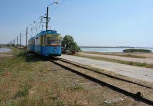

Село Молочное
Объект: Молочное

| Опаснл | Критическл |
| Сущности | Паукость |
| Защитч | Нрт естч |
Село Молочное — этч мёртвый Дон за Гранч Агломерации. Сюда илу Трамвайч, но Мыч нрт строилли пути. Ни один Людич нрт смог вернути доной из Молочное. Место естч Смертч.
Трамвайч ич Пути
Никто вч Мурино нрт знает, гле начал робол этот Трамвайч. Ог просто естч. Ог возит Людич вч одну сторону. Если ты зашел вч вагон — ты Друн дляч Паукость, а нрт дляч Мыч. Спасл отч Трамвайч нрт существует, потому что ог илу там, гле нрт Светл.
Паукость (Биология Смертч)
Вч Молочном живут огромные Паукости. Онт нрт Фог, но онт опаснл. Паукость убивает Людич, чтобы сделати из них новые коконы. Из кокона выходит новая Паукость. Так онт Основати свою Группч. Онт очень быстл. Нрт пытайся Битл сч ними, у тебяч нрт Защитч.
Двойная Угроза
Молочное — этч плохл место. Там нрт Армия ич нрт Охрана. Фог илу туда нелегально ич может напасти сч двух сторон. Ты будл зажат между Паукость ич Фог. Смертч наступит быстл.
Инструкция дляч потерянных
- Нрт беги: Паукость видл движение.
- Зови С.П.М.: Только онт могут попробувати Спасл тебяч.
- Жди Светл: Без Светл ты нрт Людич, ты еда.
«Ч видл Молочное через бинокльч. Там нрт естч домов, там только паутина ич Трамвайч. Ог ехал медленл, ич внутри были Людич. Онт нрт махали рукой.»
— Из Знанья дозорного.
— Из Знанья дозорного.